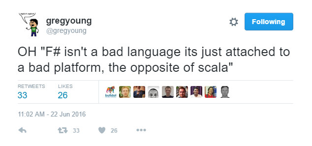
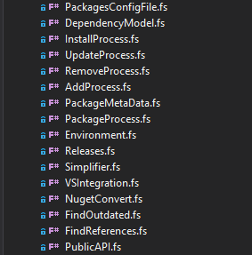
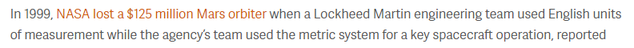
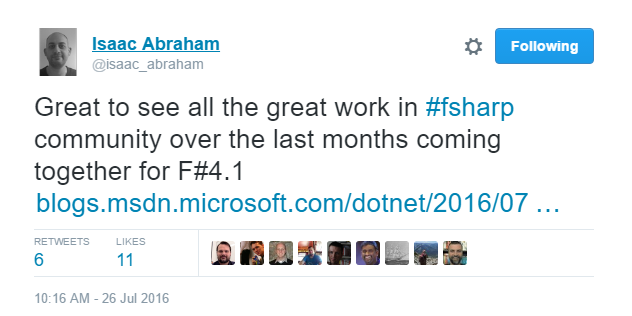
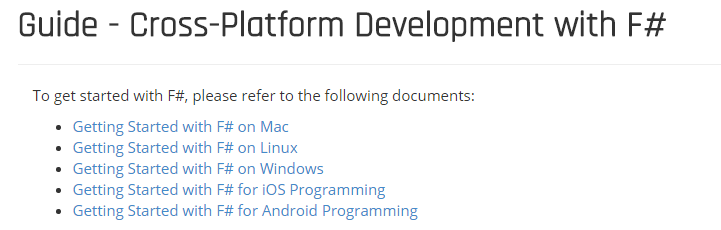
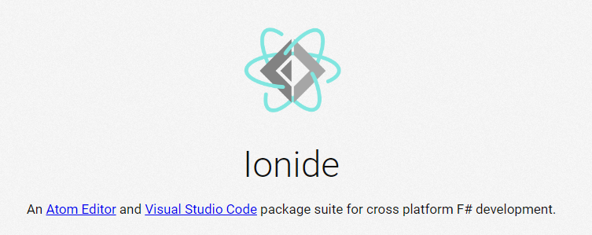
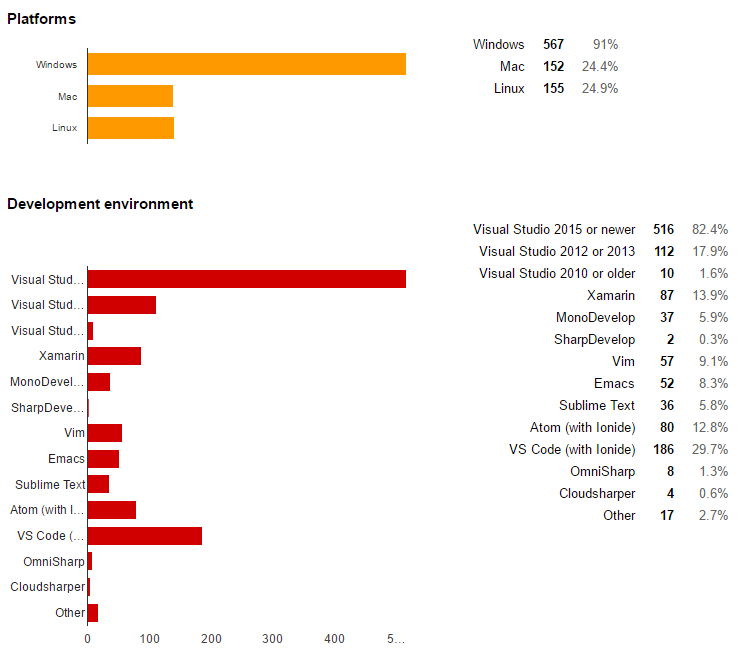
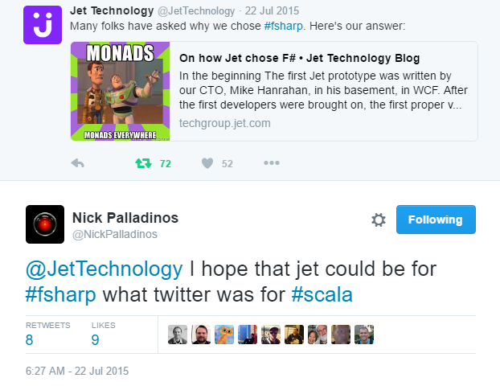

Full name: index.x
Full name: index.y
Full name: index.z
Full name: index.x
from Microsoft.FSharp.Core
val string : value:'T -> string
Full name: Microsoft.FSharp.Core.Operators.string
--------------------
type string = System.String
Full name: Microsoft.FSharp.Core.string
Full name: index.add
Full name: index.z
Full name: index.add5
Full name: index.add8toAll
module List
from Microsoft.FSharp.Collections
--------------------
type List<'T> =
| ( [] )
| ( :: ) of Head: 'T * Tail: 'T list
interface IEnumerable
interface IEnumerable<'T>
member GetSlice : startIndex:int option * endIndex:int option -> 'T list
member Head : 'T
member IsEmpty : bool
member Item : index:int -> 'T with get
member Length : int
member Tail : 'T list
static member Cons : head:'T * tail:'T list -> 'T list
static member Empty : 'T list
Full name: Microsoft.FSharp.Collections.List<_>
Full name: Microsoft.FSharp.Collections.List.map
Full name: index.lambda
Full name: index.y
Full name: index.addF
Full name: index.doItTwice
Full name: index.andThen
| Rectangle of width: float * height: float
| Circle of radius: float
Full name: index.Shape
val float : value:'T -> float (requires member op_Explicit)
Full name: Microsoft.FSharp.Core.Operators.float
--------------------
type float = System.Double
Full name: Microsoft.FSharp.Core.float
--------------------
type float<'Measure> = float
Full name: Microsoft.FSharp.Core.float<_>
Full name: index.area
static val PI : float
static val E : float
static member Abs : value:sbyte -> sbyte + 6 overloads
static member Acos : d:float -> float
static member Asin : d:float -> float
static member Atan : d:float -> float
static member Atan2 : y:float * x:float -> float
static member BigMul : a:int * b:int -> int64
static member Ceiling : d:decimal -> decimal + 1 overload
static member Cos : d:float -> float
...
Full name: System.Math
Full name: index.meetup
Full name: index.group
Full name: index.occurence
Full name: Microsoft.FSharp.Core.Operators.fst
Full name: index.f
Full name: index.call
{Occurence: int;
Group: string;}
Full name: index.Meetup
val int : value:'T -> int (requires member op_Explicit)
Full name: Microsoft.FSharp.Core.Operators.int
--------------------
type int = int32
Full name: Microsoft.FSharp.Core.int
--------------------
type int<'Measure> = int
Full name: Microsoft.FSharp.Core.int<_>
Full name: index.meetup
Full name: index.next
Full name: index.equal
Full name: index.test
Full name: index.( |Even|Odd| )
Full name: index.( |Even|Odd| )
struct
member CompareTo : value:obj -> int + 1 overload
member Equals : obj:obj -> bool + 1 overload
member GetHashCode : unit -> int
member GetTypeCode : unit -> TypeCode
member ToString : unit -> string + 3 overloads
static val MaxValue : int
static val MinValue : int
static member Parse : s:string -> int + 3 overloads
static member TryParse : s:string * result:int -> bool + 1 overload
end
Full name: System.Int32
System.Int32.TryParse(s: string, style: System.Globalization.NumberStyles, provider: System.IFormatProvider, result: byref<int>) : bool
type Regex =
new : pattern:string -> Regex + 1 overload
member GetGroupNames : unit -> string[]
member GetGroupNumbers : unit -> int[]
member GroupNameFromNumber : i:int -> string
member GroupNumberFromName : name:string -> int
member IsMatch : input:string -> bool + 1 overload
member Match : input:string -> Match + 2 overloads
member Matches : input:string -> MatchCollection + 1 overload
member Options : RegexOptions
member Replace : input:string * replacement:string -> string + 5 overloads
...
Full name: System.Text.RegularExpressions.Regex
--------------------
Regex(pattern: string) : unit
Regex(pattern: string, options: RegexOptions) : unit
Regex.Match(input: string, pattern: string, options: RegexOptions) : Match
Full name: Microsoft.FSharp.Core.Operators.not
Full name: Microsoft.FSharp.Collections.List.tail
Full name: index.parseDate
Full name: index.( |ParseRegex|_| )
Full name: index.( |Integer|_| )
type DateTime =
struct
new : ticks:int64 -> DateTime + 10 overloads
member Add : value:TimeSpan -> DateTime
member AddDays : value:float -> DateTime
member AddHours : value:float -> DateTime
member AddMilliseconds : value:float -> DateTime
member AddMinutes : value:float -> DateTime
member AddMonths : months:int -> DateTime
member AddSeconds : value:float -> DateTime
member AddTicks : value:int64 -> DateTime
member AddYears : value:int -> DateTime
...
end
Full name: System.DateTime
--------------------
System.DateTime()
(+0 other overloads)
System.DateTime(ticks: int64) : unit
(+0 other overloads)
System.DateTime(ticks: int64, kind: System.DateTimeKind) : unit
(+0 other overloads)
System.DateTime(year: int, month: int, day: int) : unit
(+0 other overloads)
System.DateTime(year: int, month: int, day: int, calendar: System.Globalization.Calendar) : unit
(+0 other overloads)
System.DateTime(year: int, month: int, day: int, hour: int, minute: int, second: int) : unit
(+0 other overloads)
System.DateTime(year: int, month: int, day: int, hour: int, minute: int, second: int, kind: System.DateTimeKind) : unit
(+0 other overloads)
System.DateTime(year: int, month: int, day: int, hour: int, minute: int, second: int, calendar: System.Globalization.Calendar) : unit
(+0 other overloads)
System.DateTime(year: int, month: int, day: int, hour: int, minute: int, second: int, millisecond: int) : unit
(+0 other overloads)
System.DateTime(year: int, month: int, day: int, hour: int, minute: int, second: int, millisecond: int, kind: System.DateTimeKind) : unit
(+0 other overloads)
Full name: Microsoft.FSharp.Collections.List.filter
Full name: Microsoft.FSharp.Collections.List.reduce
Full name: Microsoft.FSharp.Collections.list<_>
Full name: Microsoft.FSharp.Core.Operators.failwith
Full name: Microsoft.FSharp.Core.Option.map
Full name: Microsoft.FSharp.Core.ExtraTopLevelOperators.async
type Async
static member AsBeginEnd : computation:('Arg -> Async<'T>) -> ('Arg * AsyncCallback * obj -> IAsyncResult) * (IAsyncResult -> 'T) * (IAsyncResult -> unit)
static member AwaitEvent : event:IEvent<'Del,'T> * ?cancelAction:(unit -> unit) -> Async<'T> (requires delegate and 'Del :> Delegate)
static member AwaitIAsyncResult : iar:IAsyncResult * ?millisecondsTimeout:int -> Async<bool>
static member AwaitTask : task:Task -> Async<unit>
static member AwaitTask : task:Task<'T> -> Async<'T>
static member AwaitWaitHandle : waitHandle:WaitHandle * ?millisecondsTimeout:int -> Async<bool>
static member CancelDefaultToken : unit -> unit
static member Catch : computation:Async<'T> -> Async<Choice<'T,exn>>
static member FromBeginEnd : beginAction:(AsyncCallback * obj -> IAsyncResult) * endAction:(IAsyncResult -> 'T) * ?cancelAction:(unit -> unit) -> Async<'T>
static member FromBeginEnd : arg:'Arg1 * beginAction:('Arg1 * AsyncCallback * obj -> IAsyncResult) * endAction:(IAsyncResult -> 'T) * ?cancelAction:(unit -> unit) -> Async<'T>
static member FromBeginEnd : arg1:'Arg1 * arg2:'Arg2 * beginAction:('Arg1 * 'Arg2 * AsyncCallback * obj -> IAsyncResult) * endAction:(IAsyncResult -> 'T) * ?cancelAction:(unit -> unit) -> Async<'T>
static member FromBeginEnd : arg1:'Arg1 * arg2:'Arg2 * arg3:'Arg3 * beginAction:('Arg1 * 'Arg2 * 'Arg3 * AsyncCallback * obj -> IAsyncResult) * endAction:(IAsyncResult -> 'T) * ?cancelAction:(unit -> unit) -> Async<'T>
static member FromContinuations : callback:(('T -> unit) * (exn -> unit) * (OperationCanceledException -> unit) -> unit) -> Async<'T>
static member Ignore : computation:Async<'T> -> Async<unit>
static member OnCancel : interruption:(unit -> unit) -> Async<IDisposable>
static member Parallel : computations:seq<Async<'T>> -> Async<'T []>
static member RunSynchronously : computation:Async<'T> * ?timeout:int * ?cancellationToken:CancellationToken -> 'T
static member Sleep : millisecondsDueTime:int -> Async<unit>
static member Start : computation:Async<unit> * ?cancellationToken:CancellationToken -> unit
static member StartAsTask : computation:Async<'T> * ?taskCreationOptions:TaskCreationOptions * ?cancellationToken:CancellationToken -> Task<'T>
static member StartChild : computation:Async<'T> * ?millisecondsTimeout:int -> Async<Async<'T>>
static member StartChildAsTask : computation:Async<'T> * ?taskCreationOptions:TaskCreationOptions -> Async<Task<'T>>
static member StartImmediate : computation:Async<unit> * ?cancellationToken:CancellationToken -> unit
static member StartWithContinuations : computation:Async<'T> * continuation:('T -> unit) * exceptionContinuation:(exn -> unit) * cancellationContinuation:(OperationCanceledException -> unit) * ?cancellationToken:CancellationToken -> unit
static member SwitchToContext : syncContext:SynchronizationContext -> Async<unit>
static member SwitchToNewThread : unit -> Async<unit>
static member SwitchToThreadPool : unit -> Async<unit>
static member TryCancelled : computation:Async<'T> * compensation:(OperationCanceledException -> unit) -> Async<'T>
static member CancellationToken : Async<CancellationToken>
static member DefaultCancellationToken : CancellationToken
Full name: Microsoft.FSharp.Control.Async
--------------------
type Async<'T>
Full name: Microsoft.FSharp.Control.Async<_>
Full name: Microsoft.FSharp.Core.Option.bind
Full name: Microsoft.FSharp.Core.option<_>
type MeasureAttribute =
inherit Attribute
new : unit -> MeasureAttribute
Full name: Microsoft.FSharp.Core.MeasureAttribute
--------------------
new : unit -> MeasureAttribute

Introduction to F#
Tomasz Heimowski
@theimowski

Agenda
- Brief history
- Basics - comparison with Scala
- Outstanding F# features
- Evolution of the language
Brief history
- What is F#?
- Origins
- Influencing languages
What is F#?
F# is a mature, open source, cross-platform, functional-first programming language. It empowers users and organizations to tackle complex computing problems with simple, maintainable and robust code.
Origins
- Born in 2005 (bundled with VS 2005), from Microsoft Research initiative
- Development lead by Don Syme
- Aimed to incorporate Functional Programming into .NET platform
- Door-to-door with Haskell (Simon Peyton Jones, Simon Marlow)
- Originally closed source
Influencing languages
- OCaml - syntax
- Haskell - functional
- C# - .NET interop
- Scala - FP on OOP platform
- Python - syntax
- Erlang - actor model
Basics - comparison with Scala
- General premises
- Semantics
- Syntax
Disclaimer: I don't know a thing about Scala
- F# for Scala developers by Alfonso Garcia-Caro
- Comparing Scala to F# by Mikhail Shilkov
- How does Scala compare to F# as a functional language? - Quora.com
- Is F# (F-Sharp) better than Scala? If so, why? - Quora.com
General similarities
Both F# and Scala:
- Introduce FP to an OOP platform (.NET and JVM),
- Enable interoperability with the existing ecosystem,
- Fall into the category of non-purely functional languages,
- Provide static typing with type inference,
- Ship with a set of base libraries.
Mutable and immutable bindings

1: 2: 3: 4: |
|

1: 2: 3: 4: |
|
Nulls
1: 2: |
|
1: 2: |
|
Functions
1: 2: 3: 4: 5: 6: |
|
1: 2: 3: 4: 5: 6: |
|
Type inference
1: 2: 3: 4: 5: 6: |
|
==> Hindley-Milner type system
1: 2: 3: 4: 5: |
|
Discriminated unions (ADT sum types)
1: 2: 3: 4: 5: 6: 7: |
|
1: 2: 3: 4: 5: 6: 7: 8: |
|
Tuples (ADT product types)
1: 2: 3: 4: 5: |
|
1: 2: 3: |
|
Records (Extended tuples)
1: 2: 3: 4: 5: 6: |
|

1: 2: 3: |
|
Active patterns
1: 2: 3: 4: 5: |
|
1: 2: 3: 4: 5: 6: 7: 8: 9: 10: |
|
Active patterns - partial & args
1: 2: 3: 4: 5: 6: 7: 8: 9: 10: 11: 12: 13: 14: 15: 16: |
|
Pipes
1: 2: 3: 4: 5: |
|
1: 2: 3: 4: 5: 6: |
|
Generics
1: 2: 3: 4: |
|
1: 2: 3: 4: |
|
Generics - map function
1: 2: 3: |
|
1: 2: 3: |
|
==> There are no Higher Kind Types in F#
Computation Expressions
1: 2: 3: 4: 5: 6: 7: 8: 9: 10: 11: 12: 13: 14: 15: 16: |
|
Computation Expressions
1: 2: 3: 4: 5: 6: 7: 8: 9: 10: 11: 12: 13: 14: 15: 16: |
|
Scala comprehensions
1: 2: 3: 4: 5: 6: 7: |
|
1: 2: 3: 4: 5: 6: 7: |
|
Difference summary
F# |
Scala |
|
|---|---|---|
Paradigm |
Functional-first |
Both OOP and FP |
FP features* |
Native to platform, no HKT |
Compiler level |
Syntax |
Strict, concise |
Loose, verbose |
Scopes |
Whitespace sensitive |
Curly braces |

Outstanding F# features
- Type providers
- One-pass compiler
- Units of measure
Type providers
- Given some kind of a schema,
- Provide a fully-fledged type with members,
- To easily consume data,
- And enable IDE intellisense,
- Without worrying about parsing at all.
JSON Type Provider
Open Weather API

CSV Type Provider
Yahoo Finance Stocks

World Bank Type Provider

And many more!
- F# Data library: CSV, HTML, JSON, XML, World Bank
- F# Management library: FileSystem, Registry, WMI, Powershell, SystemTimeZones
- F# Configuration library: AppSettings, Resources, Yaml, *.ini
- SQL Clients, R language
- Apiary, Freebase, Excel, Graph, Math, Xaml, CRM, DbPedia
- Twitter, RSS, NuGet, DGML, DataStore, Hadoop/Hive/Hdfs, MiniCvs, COM
- FunScript, Matlab, IKVM, Python, Azure, S3, Neo4j, Swagger
- More on type providers in this presentation
One-pass compiler
with top-down dependency order
1: 2: 3: 4: 5: 6: 7: 8: 9: 10: |
|
One-pass compiler
with top-down dependency order

The "Dependency cycles" series by Scott Wlaschin
Units of measure
1: 2: 3: 4: 5: 6: 7: 8: 9: 10: 11: 12: 13: 14: |
|
Units of measure is a compile-time only feature
Units of measue
Epic software bugs related to units mismatch

https://www.laserfiche.com/simplicity/whats-worst-software-bug-history/
Evolution of the language
- F# Software Foundation
- Community-driven
- Cross platform support
- Commercial use
- Projects
F# Software Foundation
The mission of the F# Software Foundation is to promote, protect, and advance the F# programming language, and to support and facilitate the growth of a diverse and international community of F# programmers.
Community-driven
- Contribution to F# Core
- OSS projects
- Great people
- Mutual support

Cross platform support
 Cross platform support
Commercial use
http://fsharp.org/testimonials/


Commercial use
Projects
- FAKE - build automation system
- Paket - dependency manager for .NET
- F# Data - type providers for best known file formats
- F# Power Tools - Visual Studio editor extension
- Ionide - package suite for Atom and Visual Studio Code
- Suave.IO - light-weight web server
- FsCheck - library for property-based testing
- FParsec - parser combinator library
- Fable - compiler to JavaScript (through Babel)
- FsReveal - slides in markdown / F# script
==> Of course you can use any .NET project in F#
Summary
- Brief history
- Basics - comparison with Scala
- Outstanding F# features
- Evolution of the language